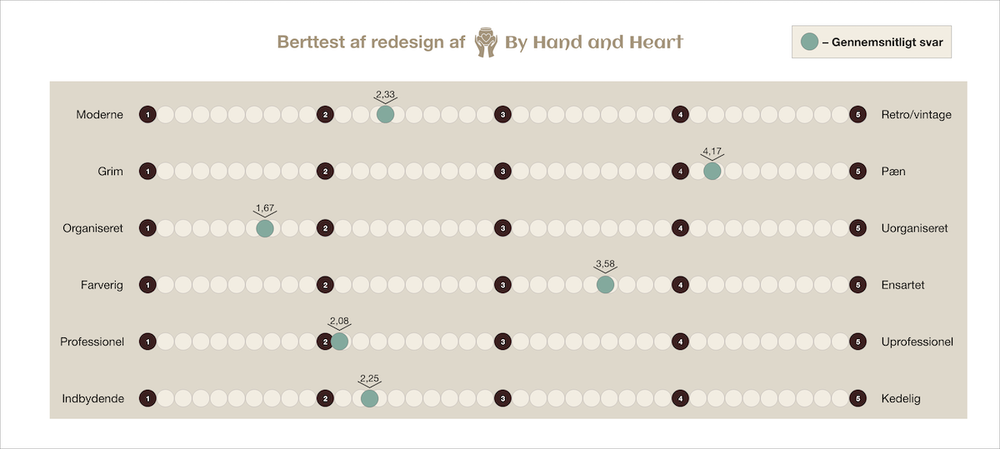
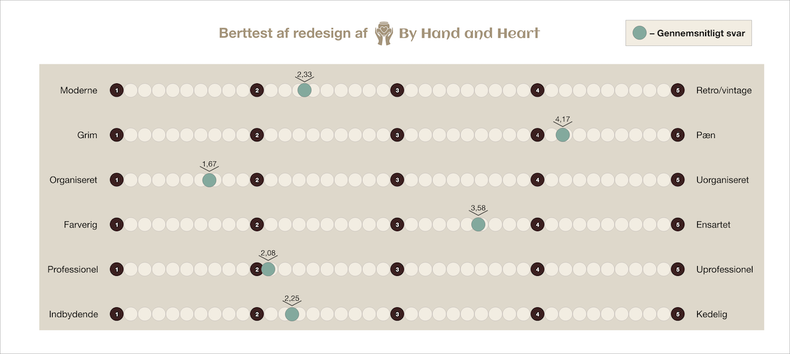

05 / BASIC CONTENT
På denne side kan I se, hvordan jeg har løst opgaverne til temaet Basic Content, hvor vi bl.a. blev introduceret til de generelle fagbegreber inden for video- og fotoproduktion, samt hvordan man selv laver mindre produktioner. Vi blev også introduceret til Premiere Pro.
05.01.02 Pilotsite
Til denne opgave skulle vi lave et lille website, som repræsenterede en video, som vi selv havde optaget på en location og klippet i Premiere Pro. Videoen skulle ligges ind på sitet på forskellige måder. På vores pilotsite skulle der desuden indgå billeder i forskellige formater, som vi også havde taget på location.
Visuelt design og billede komposition
Der er flere forskellige elementer, som indgår i en videos visuelle design bl.a. fotostil og grafik. I min pilotvideo prøvede jeg bl.a. at justere videoens farver gennem Color Correction i Premiere Pro, for at få farverne i videoen til at have en konsistent farvetone igennem videoen på trods af, at interviewdelen var filmet på en anden location og dag end b-roll klippene. Her brugte jeg funktionen Color Wheels & Match, som gør, at man ud fra et referenceskud kan korrigere de resterende skud, så de får samme grading. Til interviewdelen gjorde jeg brug af kompositionsreglen Rule of Thirds, hvilket betyder, at man skal placere objektet i billedet i venstre eller højre tredjedel af billedet, således at de andre to-tredjedele har mere luft. Rule of Thirds virker som regel mere velkomponeret og dragende end andre slags kompositioner. I min video fokuserede jeg på så vidt muligt at matche mine b-rolls til det, som blev sagt i interviewet, så det understøttede budskaberne. Det gjorde jeg ved at gøre brug af forskellige framings, bl.a. wide shots og close-ups.
SE MIN LØSNING HER
MIT MOODBOARD

05.02.01 Redesign og temadokumentation
Til den sidste opgave på semestret skulle vi redesigne en selvvalgt virksomheds website i et team. Det indebar indholdsproduktion i form af tekst, foto og videoer, samt en kodet website. Vi skulle dokumentere vores arbejdsproces undervejs
i et procesdokument.
Opgaven havde krav til bl.a. research, ideudvikling, copy, video, fotos, tests samt selve websitet. Som en afslutning på temaet skulle vi pitche vores løsning til resten af klassen.
Teamdannelse og GitHub
Denne opgave var den første, hvor vi skulle arbejde i teams. Vi startede ud med at udfylde en gruppekontrakt, hvor vi uddelegerede roller og arbejdsopgaver, og vi blev enige om vores værdier og mål ift. opgaven. Vi brugte Trello-board til
at holde gruppen opdateret på hver persons opgaver undervejs. Jeg havde først og fremmest ansvar for at lave alle videoer til hjemmesiden, jeg designede shop.html og kodede i samarbejde med gruppen, og jeg designede og kodede selv siderne
vaser.html, krus.html osv. Jeg lavede desuden wireframes til den gamle website og style tile til den nye website, og så deles vi alle i gruppen om undervejs at opdatere vores procesdokument <
Undervejs brugte vi GitHub, som er et version control system, som gjorde, at vi som gruppe kunne arbejde på det nye website samtidig, og vi kunne holde øje med ændringer over tid samt gå tilbage til gamle versioner, hvis det blev
nødvendigt. Det betød, at vi i VS Code undervejs skulle ‘stage’ vores ændringer, og derefter trykke ‘commit & sync’ med en lille besked, så de andre gruppemedlemmer fik de seneste rettelser.


Test af redesign og style tile
Som sidste del af vores opgave ønskede vi at teste det redesign, vi havde lavet, og samtidig sammenligne designet af det nye website med det gamle website. I den forbindelse brugte vi BERT-testen, som er en kvantitativ analyse, hvor man bruger en survey til at undersøge de værdier, man gerne vil have at siden skal udstråle hos brugerne. Surveyen sættes op i en slidermenu, hvor man opsætter bipolære akser overfor for hinanden. Vi brugte fx modsætninger som moderne/retro, organiseret/uorganiseret og professionel/uprofessionel. Ved at sammenligne resultaterne fra det gamle website og det nye website så vi, at respondenterne synes websitet var blevet mere indbydende end kedelig, og havde rykket sig fra 3,32 til 2,25 (hvor 1 var indbydende og 5 kedelig). Vi havde fx introduceret en frisk blå farve i samspil med nogle neddæmpede beige farver på bl.a. knapper, og jeg forestiller mig, at denne kombination bl.a. har gjort sitet mere indbydende.
SE VORES REDESIGN HER
 
